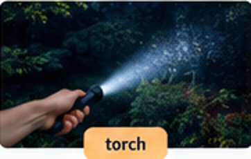

SONYA · 23 OCTOBER 2026 · LIFE VISION ELEMENTARY
Free time, real choices
Vocabulary · Free-time activities · Listening · Present Simple · Speaking
02 · VOCABULARY
New words in context
Look at the pictures. Read the examples, then answer.

torchA light you can carry.
When do you need a torch?
breakStop studying for a short time.
What do you like doing when you take a break?
routineThings you usually do every day.
What do you usually do before school?
adviceA helpful suggestion.
My friend gave me some advice.
untilUp to a particular time.
I can play outside until six o’clock.
personalityWhat someone is usually like.
Mia is usually friendly.
behaviourWhat someone does in a situation.
Mia helped her friend yesterday.
Choose the best word
Yesterday, Mia shared her lunch with a new student. Is this about her personality or her behaviour?
English explanations
Personality: what a person is usually like. Behaviour: what a person does in a particular situation. Advice is uncountable: some advice, a piece of advice.Русский перевод
torch — фонарик; break — перерыв; routine — распорядок; advice — совет; until — до (определённого момента); personality — характер; behaviour — поведение.
03 · SB P.13 · EX.3–5
Free-time activities
A. Look and write the phrases. Each phrase can be used once.
ride a bikeplay a board gametake photostidy your roomdraw a picturemake a cake
B. Extra collocations · Complete the phrases
Use each ending once. Two phrases start with go for a; you can write them in either order.
walkruncomicmusiclanguagewebsite
C. Indoors, outdoors or both?
Write the activities in the correct part of the circles. Use each activity once.
design a websitelearn a languagemake a cakeplay a board gameread a comictidy your roomgo for a walkgo for a runride a bikelisten to musictake photosdraw a picture
Speak: Which two activities do you enjoy? Which activity would you like to try?
04 · SB P.13 EX.7
Listening · Track 1.09
Show transcript · Track 1.09
1. I really like sport. I love going for a run. I go to the park every weekend. I go with my brother. He doesn’t like running. He rides his bike. I don’t ride with him because I can’t ride a bike.
2. I’ve got a Playstation and a TV in my room. When I come home from school I play video games with my brother. I really like board games too. I play them with my family and also with my friends.
3. I haven’t got many hobbies, really. I read a lot of comics. I think books are boring. I love music and I listen to songs on the bus every morning. I like rock and pop.
Listen to three people. Match each speaker to an activity.
Speaker 1:
Speaker 2:
Speaker 3:
Speak: Which speaker is most like you? Why?
05 · SB P.14 · GB P.133
Grammar in action
Complete the sentences and short conversations. Use do, does, don’t, doesn’t.
Grammar help
I / you / we / they: do, don’t. He / she / it: does, doesn’t. After does or doesn’t, use the verb without -s.A. Complete the sentences
1. My cousin play video games on school nights.
2. your friends take photos at weekends?
3. Lena read comics, but she likes films.
4. your brother tidy his room?
5. My cousins go to school with me. They live in another town.
6. you and your friends ride bikes?
B. Make questions and short answers
Complete both gaps.
1. Amir do homework? Yes, he .
2. your friends play board games? No, they .
3. Mia take photos? Yes, she .
4. you tidy your room every day? Yes, I .
C. Five mini-dialogues · Grammar Booster p.133 Ex.3
Complete the conversations. Then choose two questions to ask your teacher.
1. Zoltan like Italian food? Yes, he , but he like pizza.
2. you and your sister read a lot? Yes, we , but we read comics.
3. your parents listen to music? Yes, they , but they play instruments.
4. you speak French? No, I , and I speak German.
5. Beata play chess? No, she , because she like board games.
06 · SPEAKING
A day that works for me
School finishes at 3 p.m. You have some homework to do, but you also want time to relax. Put the activities in your preferred order, choose times and explain your plan.
FirstThenAfter thatLaterFinally
Start your answer
First, I… at… Then I…Useful phrases
After that, I… · I need time for… · I can… until… · Finally, I…Useful words
homework · free time · take a break · routine · afternoon · eveningTalk about your plan
What would you like to do first? Why? When will you meet your friend? Do you have time for everything? What can you change if you feel tired?
07 · ENGLISH QUEST
English Quest
Open the pieces for 09.10, 16.10 and 23.10. You earned them by coming to class and doing your work.
Open the puzzle ↗Extra practice · SB p.13 Ex.8–10
Present Simple · Complete the verbs
1. Maya for a run on Saturdays.
2. My brother his room on Sundays.
3. We our bikes in the park.
4. Lena photos of animals.
5. My friends to music after school.
6. Tom comics before bed.
7. I English every week.
8. My parents for a walk in the evening.
Rank your favourite five activities
Choose five activities from today. Put them in order from 1 (favourite) to 5.
1.
2.
3.
4.
5.
Speak
Where do you do these activities? When do you do them? Why do you like them?
REVIEW v4 · Not published · Original Track 1.09 included in the package.